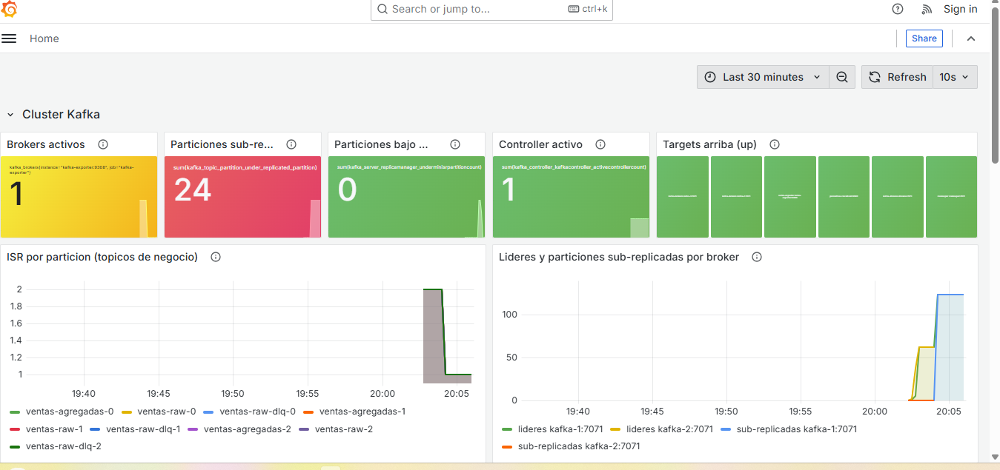
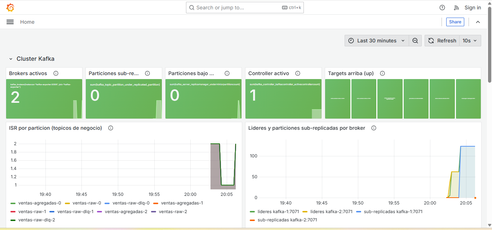
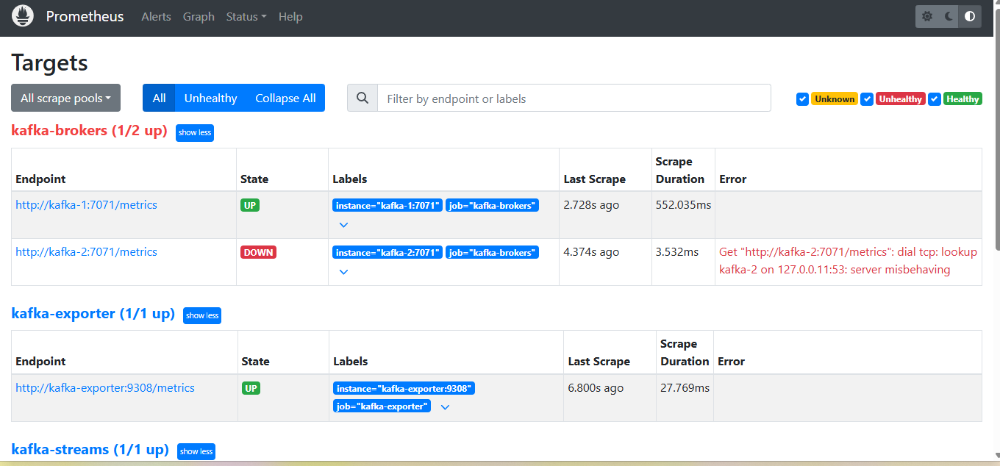
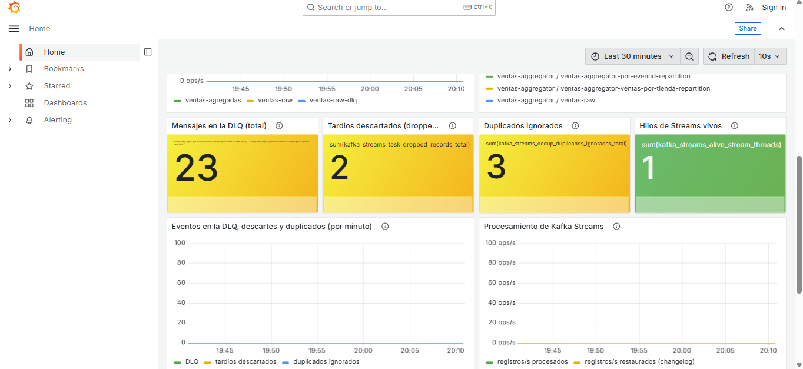

Streaming resiliente
de ventas
Integración, validación y recuperación con Kafka Streams: datos inválidos aislados, duplicados eliminados, ventanas por tiempo de evento y tolerancia a fallos demostrada en local y en AWS.
Del evento de venta al agregado por tienda
Haz clic en cada componente para ver su función y la decisión de diseño que lo justifica.
Ningún dato se pierde sin rastro
Errores de sintaxis y de negocio aislados
- 7 motivos: JSON inválido, valor vacío, campo ausente,
eventTimeinválido, cantidad, precio y total ≠ cantidad × precio. - El consumidor sigue activo: el inválido va a
ventas-raw-dlq. - La DLQ conserva valor original, clave, tópico fuente, motivo y un
correlationIdque también está en el log.
Log de la aplicación · RUNNING
EOS v2 ≠ deduplicación de negocio
exactly_once_v2 asegura que un mismo registro no tenga efecto doble ante fallos o reintentos. Pero si la caja envía dos veces la misma venta, Kafka guarda dos registros distintos (offsets 27, 28, 29).
Solución: re-key por eventId → state store con retención de 10 min (≥ ventana + gracia), respaldado por changelog: sobrevive reinicios.
Resultado
Política de tardíos (ventana 10:00–10:01)
- La venta se asigna por
eventTime(cuándo ocurrió), no por cuándo llegó. - Dentro de la gracia (hasta 10:03): se suma a su ventana.
- Fuera de la gracia: se descarta → log
Skipping record for expired window+ métricadropped-records. No va a la DLQ. suppresspublica un único resultado final cuando cierra la gracia.
Línea de tiempo
Un broker cae y el sistema sigue
Simulador del cluster · tópico ventas-raw (3 particiones, RF 2)
kafka-1 UP
kafka-2 UP
| Partición | Líder | Réplicas | ISR |
|---|
Reinicio del consumidor (Kafka Streams)
Medido en AWS
Resultados verificables en local y en AWS
Grafana y Prometheus durante las pruebas (clic para ampliar):




☁️ AWS en un clic
desplegar-aws.bat crea red, llave, EC2 t3.medium, Docker y el mismo compose. pruebas-aws.bat repite los escenarios; destruir-aws.bat limpia todo.
🔁 Reproducible
Sin Java local: se compila y prueba en Docker. Tópicos por kafka-init, configuración en .env + AppConfig, sin secretos en el repo.
⚠️ Límites conocidos
ZooKeeper de un nodo, 2 brokers en una máquina, RF 3 imposible, Kafka sin TLS/SASL, caída del consumidor mayor a la gracia.